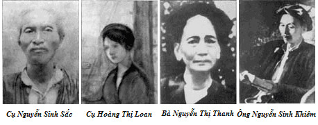

Tiểu Sử
Cuộc đời và hành trình của Chủ tịch Hồ Chí Minh
Cuộc Đời & Tiểu Sử
Thời Thơ Ấu (1890-1911)
Gia đình và quê hương
Chủ tịch Hồ Chí Minh, tên khai sinh là Nguyễn Sinh Cung, sinh ngày 19/05/1890 tại làng Hoàng Trù, xã Kim Liên, huyện Nam Đàn, tỉnh Nghệ An - một vùng đất giàu truyền thống cách mạng.
Cha mẹ
Cha: Nguyễn Sinh Sắc (1862-1929), một nhà nho yêu nước, từng đỗ Phó bảng, có tư tưởng tiến bộ, thường xuyên giáo dục con về lòng yêu nước.
Mẹ: Hoàng Thị Loan (1868-1901), người phụ nữ đức hạnh, tần tảo, là tấm gương về đạo đức và sự hy sinh cho gia đình.
Anh chị em
Người có hai anh chị em: Nguyễn Thị Thanh (chị gái) và Nguyễn Sinh Khiêm (anh trai). Cả gia đình đều có tinh thần yêu nước và cách mạng.
Tuổi thơ
Tuổi thơ của Người gắn liền với cảnh nghèo khó của gia đình nông dân, nhưng được nuôi dưỡng trong tình yêu thương và giáo dục về đạo đức, lòng yêu nước từ cha mẹ.

Khu di tích Kim Liên, Nam Đàn, Nghệ An
Gia đình của Chủ tịch Hồ Chí Minh
Hành Trình Tìm Đường Cứu Nước (1911-1941)
05/06/1911 - Ra đi từ Bến cảng Nhà Rồng
Từ Bến cảng Nhà Rồng (Sài Gòn), Người lên tàu Amiral Latouche Tréville với tên Văn Ba, làm phụ bếp trên tàu để có cơ hội ra nước ngoài.
Đây là bước đầu tiên trong cuộc hành trình 30 năm tìm đường cứu nước, với quyết tâm "Tự do cho đồng bào tôi, độc lập cho Tổ quốc tôi".
"Tôi muốn đi ra nước ngoài để xem nước Pháp và các nước khác. Sau khi xem xét họ làm như thế nào, tôi sẽ trở về giúp đồng bào chúng ta."
1911-1917 - Hoạt động ở Pháp
Người làm nhiều nghề khác nhau: phụ bếp, thợ ảnh, thợ điện, thợ nung gốm... để kiếm sống và học hỏi.
Tham gia các hoạt động chính trị, học tập và nghiên cứu về cách mạng, tiếp xúc với các nhà cách mạng quốc tế.
Đọc nhiều sách báo tiến bộ, nghiên cứu các cuộc cách mạng trên thế giới, đặc biệt là Cách mạng Pháp và Cách mạng Nga.
1919 - Gửi bản Yêu sách của nhân dân An Nam
Tại Hội nghị Versailles, Người gửi bản "Yêu sách của nhân dân An Nam" đòi quyền tự do, dân chủ và bình đẳng cho nhân dân Việt Nam.
Bản yêu sách gồm 8 điểm chính: ân xá tù chính trị, cải cách pháp luật, tự do báo chí, tự do hội họp, tự do cư trú, tự do xuất dương, tự do học tập, thay thế chế độ sắc lệnh bằng chế độ pháp luật.
Đây là lần đầu tiên tiếng nói của nhân dân Việt Nam được phát ra trên trường quốc tế.
1920 - Tham gia Đảng Cộng sản Pháp
Ngày 25/12/1920, tại Đại hội Tours, Người bỏ phiếu tán thành Quốc tế III và trở thành một trong những người sáng lập Đảng Cộng sản Pháp.
Đây là bước ngoặt quan trọng trong tư tưởng cách mạng của Người, từ chủ nghĩa yêu nước chuyển sang chủ nghĩa cộng sản.
"Muốn cứu nước và giải phóng dân tộc, không có con đường nào khác ngoài con đường cách mạng vô sản."
1923-1924 - Học tập tại Liên Xô
Người đến Moskva học tập tại Trường Đại học Phương Đông, nghiên cứu chủ nghĩa Mác-Lênin và kinh nghiệm cách mạng.
Tham gia các hoạt động của Quốc tế Cộng sản, gặp gỡ nhiều nhà cách mạng từ các nước thuộc địa.
Đây là nơi Người tiếp thu chủ nghĩa Mác-Lênin một cách có hệ thống.
1924-1927 - Hoạt động ở Trung Quốc
Người đến Quảng Châu, thành lập Hội Việt Nam Cách mạng Thanh niên (1925), xuất bản báo "Thanh niên".
Mở các lớp huấn luyện cách mạng, đào tạo cán bộ cho cách mạng Việt Nam.
Tại đây, Người viết tác phẩm "Đường Kách mệnh" - cẩm nang cách mạng cho cán bộ.
Thành Lập Đảng Cộng Sản Việt Nam (1930)
Hội nghị hợp nhất
Ngày 03/02/1930, tại Hồng Kông, Người chủ trì Hội nghị hợp nhất các tổ chức cộng sản trong nước.
Thành lập Đảng Cộng sản Việt Nam, đánh dấu bước ngoặt vĩ đại của cách mạng Việt Nam.
Các tổ chức được hợp nhất
- Đông Dương Cộng sản Đảng
- An Nam Cộng sản Đảng
- Đông Dương Cộng sản Liên đoàn
Ý nghĩa lịch sử
Đây là sự kiện có ý nghĩa quyết định đối với cách mạng Việt Nam, tạo ra sự thống nhất về tổ chức và tư tưởng.

Tranh tư liệu về hội nghị thành lập Đảng Cộng sản Việt Nam

Chánh cương vắn tắt của Đảng
Tuyên Ngôn Độc Lập (1945)
Ngày 02/09/1945
Tại Quảng trường Ba Đình, Hà Nội, Người đọc Tuyên ngôn Độc lập, khai sinh ra nước Việt Nam Dân chủ Cộng hòa.
"Tất cả mọi người đều sinh ra có quyền bình đẳng. Tạo hóa cho họ những quyền không ai có thể xâm phạm được..."
Nội dung chính của Tuyên ngôn
- Tố cáo tội ác của thực dân Pháp
- Khẳng định quyền độc lập của dân tộc Việt Nam
- Tuyên bố thành lập nước Việt Nam Dân chủ Cộng hòa
- Kêu gọi nhân dân đoàn kết bảo vệ độc lập
Ý nghĩa lịch sử
Đây là văn kiện lịch sử quan trọng, đánh dấu sự ra đời của nhà nước độc lập đầu tiên ở Đông Nam Á.
Tuyên ngôn Độc lập
Những Năm Cuối Đời (1945-1969)
Lãnh đạo kháng chiến chống Pháp (1945-1954)
Người lãnh đạo nhân dân Việt Nam tiến hành cuộc kháng chiến trường kỳ chống thực dân Pháp, kết thúc bằng chiến thắng Điện Biên Phủ năm 1954.
Lãnh đạo kháng chiến chống Mỹ (1954-1969)
Tiếp tục lãnh đạo cuộc kháng chiến chống đế quốc Mỹ, đấu tranh cho sự thống nhất đất nước.
Xây dựng đất nước
Đặt nền móng cho việc xây dựng chế độ mới, phát triển kinh tế, văn hóa, xã hội.
Ngày 02/09/1969
Chủ tịch Hồ Chí Minh qua đời tại Hà Nội, để lại niềm tiếc thương vô hạn cho toàn dân tộc Việt Nam và bạn bè quốc tế.
Chủ tịch Hồ Chí Minh chủ trì phiên họp Hội đồng Chính phủ sau chiến thắng Điện Biên Phủ tại xã Kim Quan, huyện Yên Sơn, tỉnh Tuyên Quang (23/7/1954).